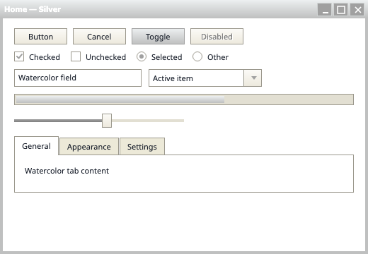
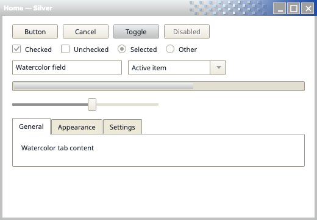
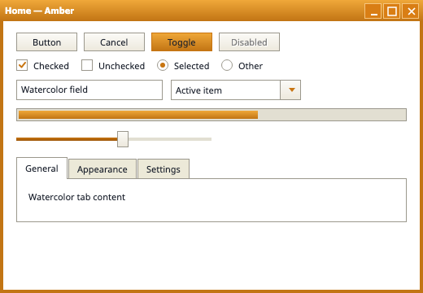
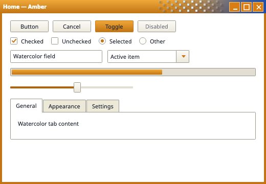
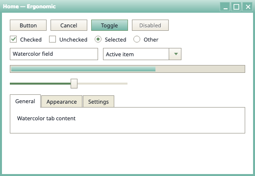
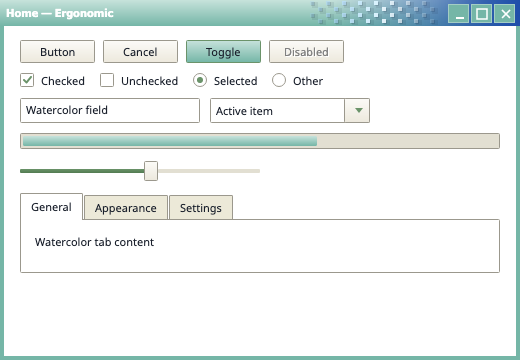
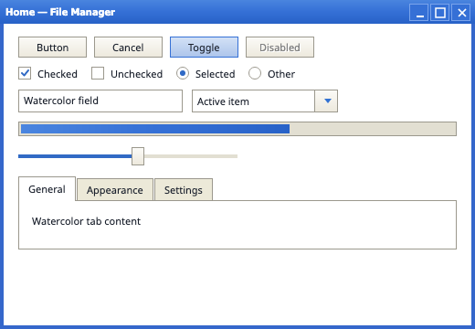
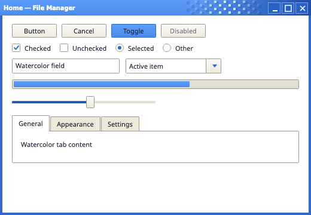
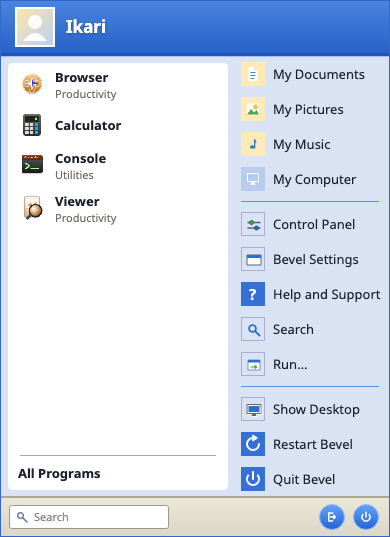
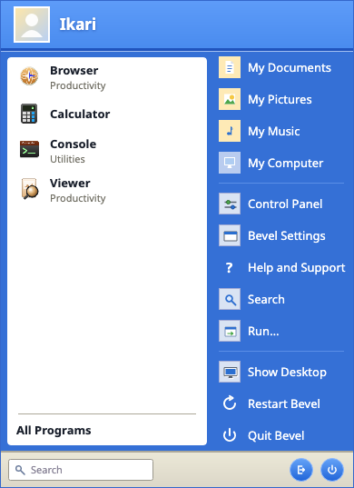

Bevel Flat theme — render delta
PRISTINE (`renders/_before/`, parent commit) → MINE (this pass, fresh 14:00 re-render) · source:
look-delta.md §5 · 2026-10-10
◀ BEFORE = pristine render (`_before/`)
AFTER ▶ = this pass
Drag the divider to compare — exact pixel alignment
Ten changed variants, ordered simplest→coarsest (table rows 1–10). Numbers = differing pixels on the fresh 14:00
re-render.
pastel-window, pastel-startmenu and flat-filer diffed
0 px and are not shown. Taskbar clock digits are clock-phase-dependent
(49→146, 490→587 between the 10:59 and 14:00 runs) — see footnote below. Images are scaled to fit; natural
sizes: taskbar 900×30, window 520×360, start menu 390×537.
1 · flat-taskbar-blue
BEFORE · pristine
AFTER · this pass
clock digits x=866..887, y=10..19 — clock text/backplate recolored (
#242A34→#1A202C ink); only non-Blue-early-return surface reachable at runtime.2 · flat-taskbar-ergonomic
BEFORE · pristine
AFTER · this pass
clock digits x=866..887, y=10..19 — same clock recolor; phase-dependent as row 1.
3 · flat-taskbar-silver
 BEFORE · pristine
AFTER · this pass
BEFORE · pristine
AFTER · this pass
clock digits x=866..887, y=10..19 — same clock recolor; phase-dependent as row 1.
4 · pastel-taskbar
BEFORE · pristine
AFTER · this pass
clock digits x=866..887, y=10..19 — baseline artifact only (§4); phase-dependent as row 1.
5 · flat-taskbar-amber
BEFORE · pristine
AFTER · this pass
start button + first task button x=9..58, clock digits x=866..887, rows y=6..23 — amber theme’s start glyph + pressed/checked task button go warm-gray/paper → dark navy
#1A202C family; clock recolor as above; phase-dependent (490 px on the 10:59 run).6 · flat-window-silver


BEFORE · pristine AFTER · this passcaption buttons cluster x=310..519 y=40..62, y=73..74; caption/border rows y=0..15, 269..272 — caption buttons + thin caption bands recolored.
7 · flat-window-amber


BEFORE · pristine AFTER · this passcaption buttons cluster x=310..519 y=40..62, y=73..74; caption/border rows — same as silver (amber window chrome).
8 · flat-window-ergonomic


BEFORE · pristine AFTER · this passcaption buttons cluster x=310..519 y=40..62, y=73..74; caption/border rows y=0..15, 269..272 — same as silver/amber (ergonomic window chrome); measured directly, byte-identical to silver/amber.
9 · flat-window-blue


BEFORE · pristine AFTER · this passfull-width caption band y=0..25 (plus scattered glyph/edge rows) — caption band pastel → 3-stop cobalt ramp
#4A85DF→#3570D6→#2862C8; caption buttons + glyphs to #3570D6/#7AA4EB/white; corner radii flattened → square.10 · flat-startmenu-blue


BEFORE · pristine AFTER · this passwhole menu surface: banner x=1..118, header band, pinned column, places column x=122..389, rows y=1..52 and y=57..495 — banner+places column saturated cobalt → pale lilac
#D9E3F3 with #1A202C ink place text (#3570D6→#D9E3F3 single largest swap); selection row #316AC5, white pinned column, header/footer bands unchanged.
Phase-jitter footnote. The five taskbar rows (1–5) are clock-phase-dependent: rows 1–4 moved 49→146 px and
row 5 moved 490→587 px between the 10:59 and the fresh 14:00 runs — exactly +97 px on every strip (the clock digits’
second-frame ink). The diff clusters are unchanged; only the set of differing digit-ink pixels moves. Rows 6–10 are
byte-stable across runs. Jitter source:
ClockWidget / TaskbarView / ShellModel
Background-priority timers not settled by RunJobs() before capture — see look-delta.md §4.